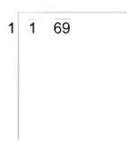
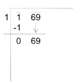
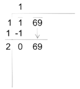
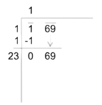
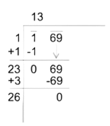

Roots in mathematics are numbers that are divided by itself. Think of roots being the opposite of exponents, instead of multiplying the number by itself a numerous amount of times, the number would be divided by itself a numerous amount of times.
An example of a rooted number looks like this…
A rooted number will appear as itself with a line that drops down then goes up, eventually directly above the number. This example is called a square root. Square roots are when a base number is divided by itself. So in this example, we know that 5 times 5 equals 25, which means that the square root of 25 is 5. The number that can be multiplied by itself that equals the number (in this case 25) is called the root.
Every root in mathematics has a number on the upper left side of it like this…
This indicates the amount of times the number is being divided by itself so in this example, 81 is being divided by its base number once. To find the base number we can see that 9 times itself equals 81, so the square root of 81 is 9.
Now sometimes the number on the upper left side of the root number can be greater than 2 like this…
The answer to this equation is 216 being divided twice by its base number. A common strategy is just to multiply a number by itself twice. So…
By looking at the results from multiplying 1 through 7, 6 is the final answer since 6 cubed equals 216.
The repeated subtraction method is a strategy that is used to solve the square root of a number. Let's say we had a number being rooted by 2…
The method first starts by subtracting the number inside the square root by one.
Then the repeating part comes in as we need to get the number to zero if we can, the method keeps going on as every time we subtract, we subtract by the next odd number more like this…
After reaching the number zero. We would have to count how many times we subtracted the number. In total we subtracted the number 9 times.
The long division method is another strategy to find the root of a number. The method first starts with this…
The Divisor will start with 1…

Then we divide the first digit by the divisor and bring down the second number…

Now we add the number that was subtracting the first number (1) to the divisor…

Then after bringing down the second number and adding it to the divisor, we need to find a second digit that would make the divisor a two digit number and would make 69 divisible by. Since 23 times 3 equals 69, 23 would become the new divisor.

Now the divisor is going to be 23. The next step is to divide the 69 by 23 which equals 3…

The final answer is 13 which means that the square root of 169 is 13.